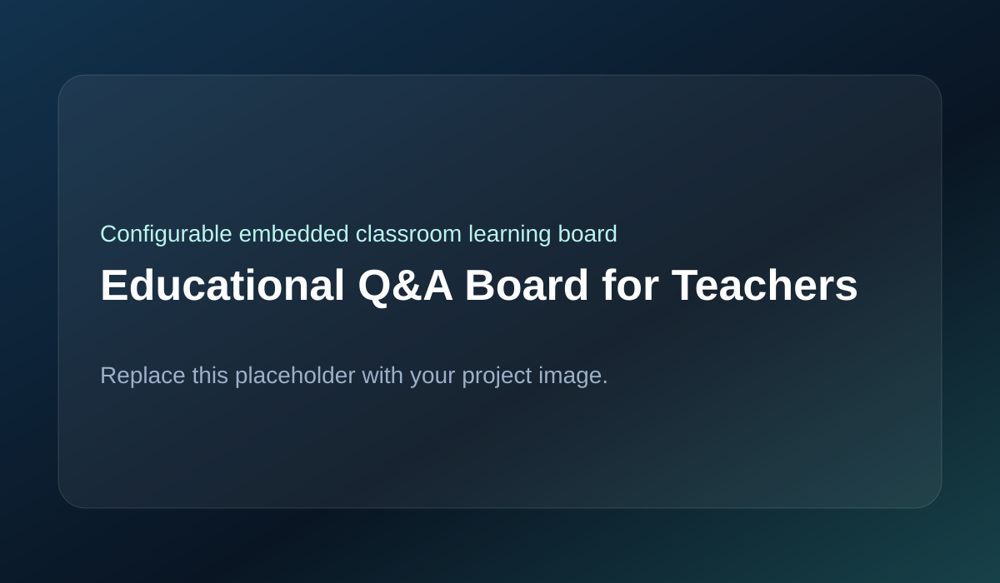

Developed an embedded educational board where teachers configure correct answers using switches, and students connect questions to answers using a wire to receive immediate visual feedback.

The board presents four questions and four answers on the front panel. Each question has four configurable switch positions that allow the teacher to define the correct matching answer. Students use a wire to connect question and answer terminals, and the controller checks whether the selected connection matches the configured mapping. Visual indicators provide immediate feedback. The electronics are built around an Arduino Nano and I²C I/O expansion to support the required number of inputs.
A configurable switch-based answer mapping system was used so the same board could support many question sets without hardware changes. Physical wire-based interaction makes the activity intuitive and engaging. I²C expanders were used instead of wiring every switch directly to the Arduino, solving the microcontroller pin limitation and reducing wiring complexity.
Challenges included reliable detection for multiple question-answer combinations, stable reading of switch configurations, preventing false triggering during physical contact, and working around Arduino pin limitations. Using I²C expansion was necessary because directly wiring all switches to the microcontroller would not fit.
The final prototype successfully demonstrated a configurable classroom Q&A system with immediate feedback. By using I²C expanders, it handled a larger number of switch inputs through only two communication lines, making the design compact, scalable, and suitable for repeated classroom use.